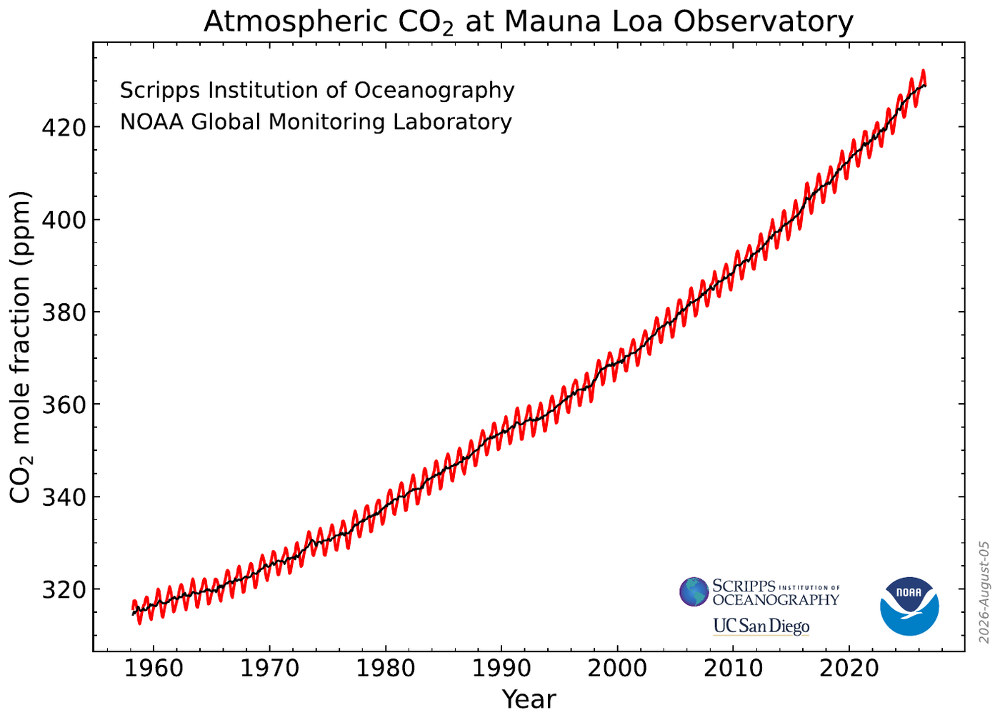

Relevant publications
Stephens et al., 2026, PNAS; Jin et al., Under review; Morgan et al., Under review
The global carbon cycle
Rising atmospheric CO2 from fossil fuel emissions is the principal driver of global warming since the industrial era. About half of these emissions are taken up by the land biosphere and the ocean, which slows the accumulation of CO2 in the atmosphere and moderates the warming it would otherwise cause. These natural sinks respond to rising CO2 and to climate variability, yet their magnitude and evolution remain highly uncertain. Precise estimates of the sinks are therefore needed to project future climate change.
My research involves constraining the global carbon cycle using atmospheric measurements of O2 and CO2. Comparing the results with models that simulate ocean and land processes reveals systematic biases in those models and provides an observational constraint on the global carbon budget.
Current research involves building a multi-tracer Bayesian inversion of the global carbon cycle that constrains the annual net land and ocean carbon sinks consistently with both the atmospheric and the ocean-interior observation records and with the physical couplings between air-sea fluxes of heat, O2, and CO2.